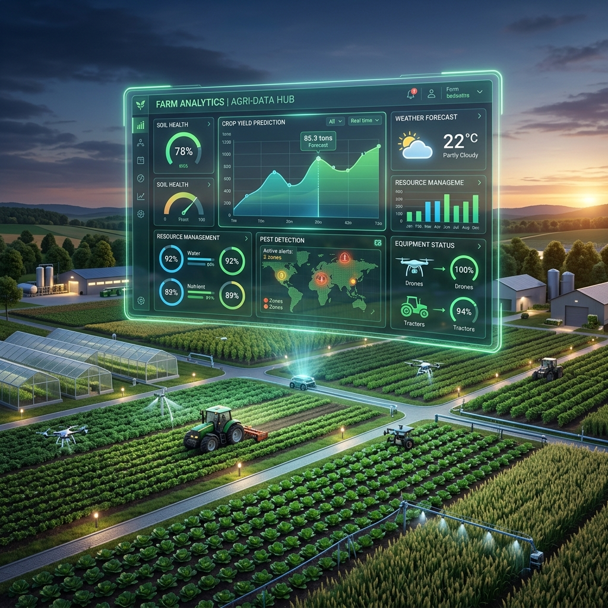

Scenario 3: Agricultural Research & Policy Workspace
Interactive crop-environment analytics dashboard
Explore patterns across crops, regions, and seasons. Filter data, compare nutrient profiles, and export findings for policy planning and evidence-based strategy design.
